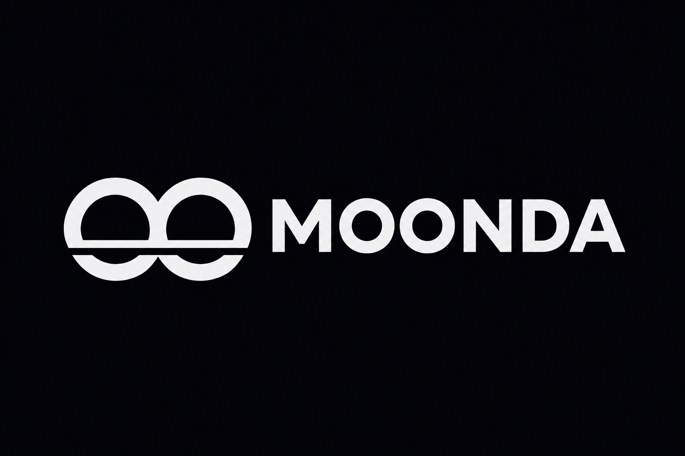
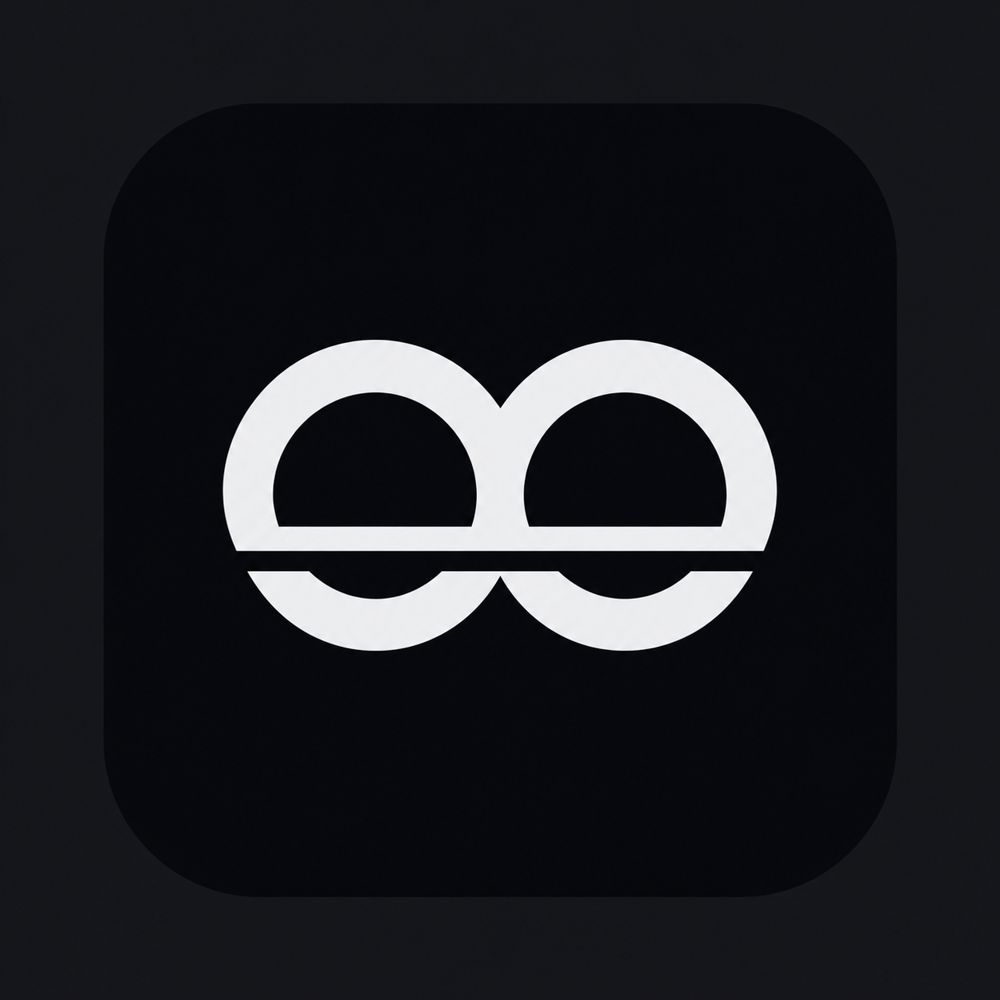
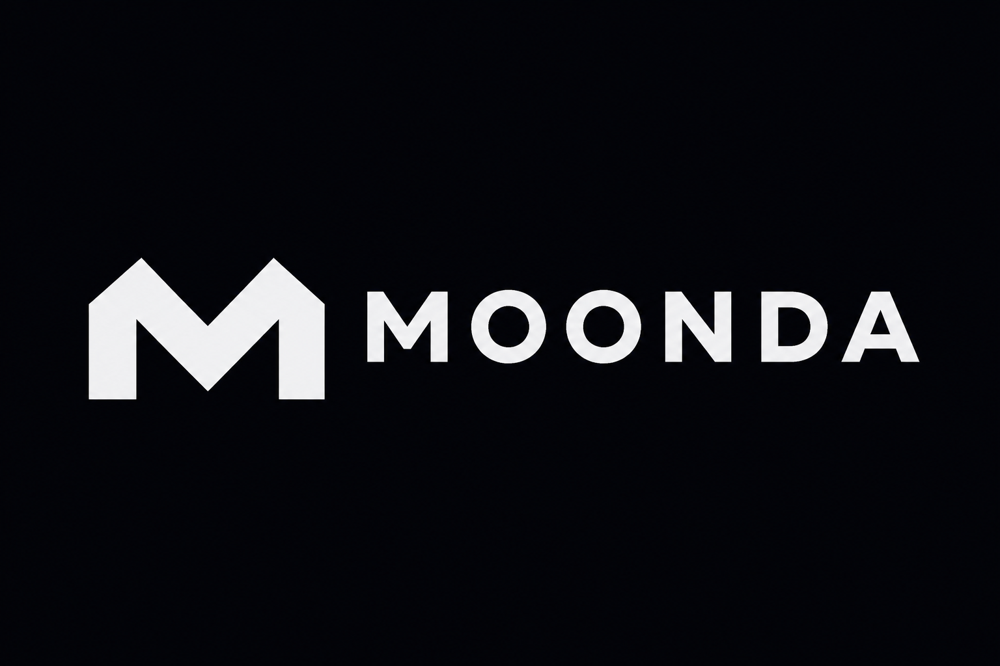
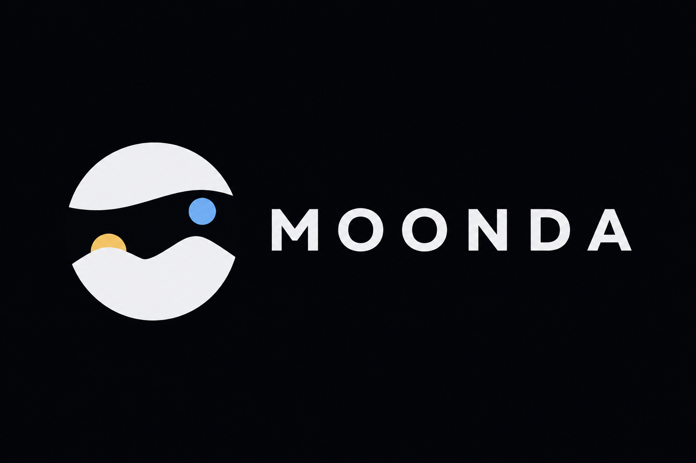
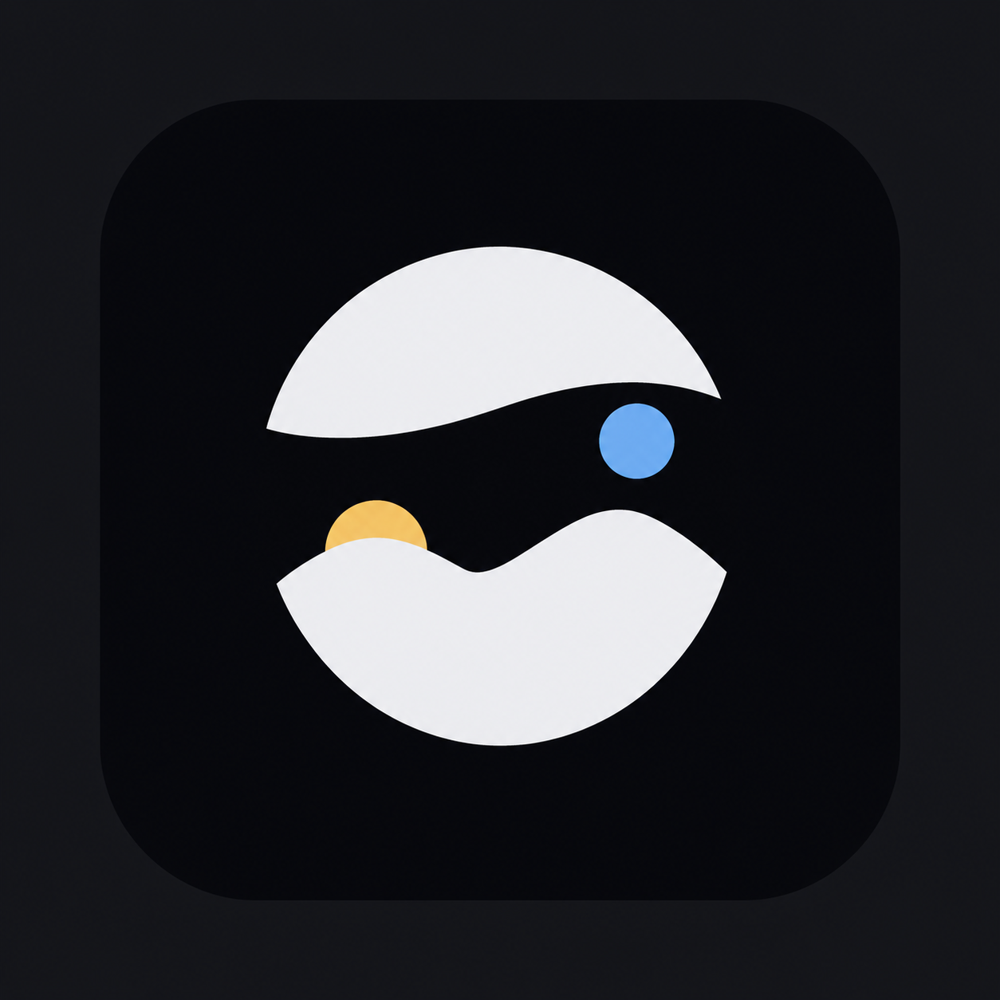

The two O's fused, cut by one horizon line. Uses the name, but reads as "ee" or a pair of glasses. Nothing lunar.

Very strong at 16 px. But it's a generic geometric M: could be a roof, a real-estate brand or a crypto coin.


Explains the app (Sun + Earth over the horizon). Risks reading as a winking face; the dots vanish in a browser tab.
Codex's bold M, but its top edge is the real skyline seen from de Gerlache Rim 2, an Artemis III candidate site, computed by MOONDA from NASA LOLA data (stretched 10× upward). The gold Sun sits in the notch, because at the south pole the Sun skims the horizon. Still reads as an M in a 16 px tab.